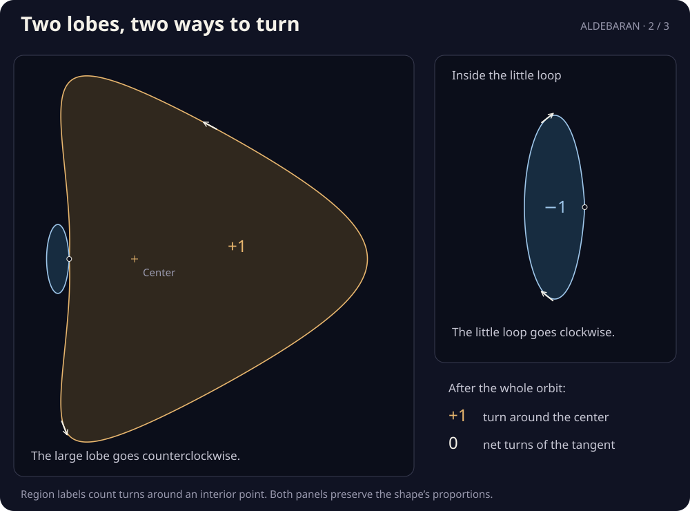

Two lobes, two ways to turn
One crossing makes two lobes: a large one traveled counterclockwise, and a little loop traveled clockwise. Follow the white point. A line from the center and an arrow along the path tell two different stories about turning.
Home. One net turn around the center; zero net turns of the direction of travel.
Around the center
net turns
Direction of travel
net turns

What are the two counters counting?
Imagine standing at the center and watching the white point. The dotted line turns as the point moves. Its counter starts with the line pointing right. After the full orbit, it has made one net counterclockwise turn: +1.
Now imagine riding along the path. The white arrow is the way you are facing, also called the tangent direction. Its counter starts pointing up. Left turns add; right turns subtract. Over the whole orbit they cancel: 0. Choose Start, then Home: the point and arrow return to the same place, but the center’s counter remembers a full turn.
The signs printed inside the lobes answer a related question: how many times does the whole curve wrap around a point in that region? Gold counts +1; blue counts −1. Those region labels stay fixed while the counters follow your progress.
With the slider focused, arrow keys move by 1% of the orbit; hold Shift for steps of 0.1%. Page Up and Page Down move by 10%. Home returns to the start; End finishes the orbit.
What happens at the crossing?
The same place is visited twice, about 37% and 63% of the way through the orbit. The first visit enters the little loop; the second leaves it. Keep following the smooth branch each time. Switching to the other branch would make a corner and change the path.
The two branches are almost parallel here. The close-up uses equal scales horizontally and vertically, so the thinness is real. These are the sketchbook’s rhythms 2 / 3, reflected vertically so that positive turns look counterclockwise. Nothing moves until you change a control.
A short trigonometric proof shows there is exactly one crossing and explains why the tangent’s net count is zero. For curves with many overlaps, move a point between the regions.
Can this drawing change into another zero-turn curve without stopping? Compare two routes between the same drawings: one makes cusps, while the other keeps moving.
The same zero turn count can hide another difference. Move the starting point and count the crossings in order ↗